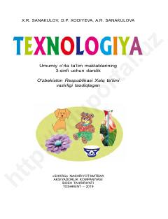

T33-sinf o'quvchilari uchun texnologiya fanidan amaliy darslik.
Ushbu darslik umumiy o'rta ta'lim maktablarining 3-sinf o'quvchilari uchun mo'ljallangan bo'lib, texnologiya fanidan amaliy ko'nikmalarni rivojlantirishga qaratilgan. Kitobda turli materiallardan buyumlar, o'yinchoqlar va modellar yasash, shuningdek, ish qurollaridan xavfsiz foydalanish qoidalari yoritilgan.